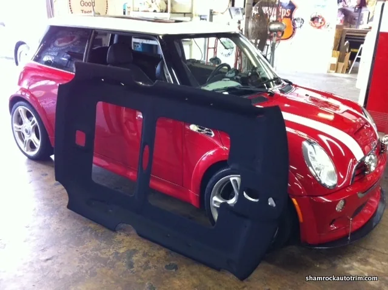

Headliners
Shamrock can remove your headliner board and recover it with new material in one day.
Almost every automobile, from a Kia Rio to a Bentley Continental GT, has something in common. The car manufacturers install a hard headliner board, made out of cardboard or laminated fiberglass. The next step is to cover this board with a finished material that matches the interior — cloth, vinyl, suede or leather. In order to secure this material and provide a good surface to glue to, they laminate the finished material to a piece of foam, then glue the two pieces to the hard headliner board.
Over time, the foam base between the finished material and the headliner board breaks down from heat and turns to dust, and the finished material can no longer be secured to it. The solution is to remove the trim panels and carefully take the hard headliner board out of the car. The board is then cleaned and prepared with solvent, and new finished material and foam are glued to the hard headliner board.
Shamrock stocks the new materials, and in most cases you can drop off your car in the morning and pick it up in the afternoon. Another option is to come in the morning, wait twenty minutes in our air conditioned office with internet, and have us remove the headliner board. You then leave with your car and return in the afternoon for us to install the new one.
